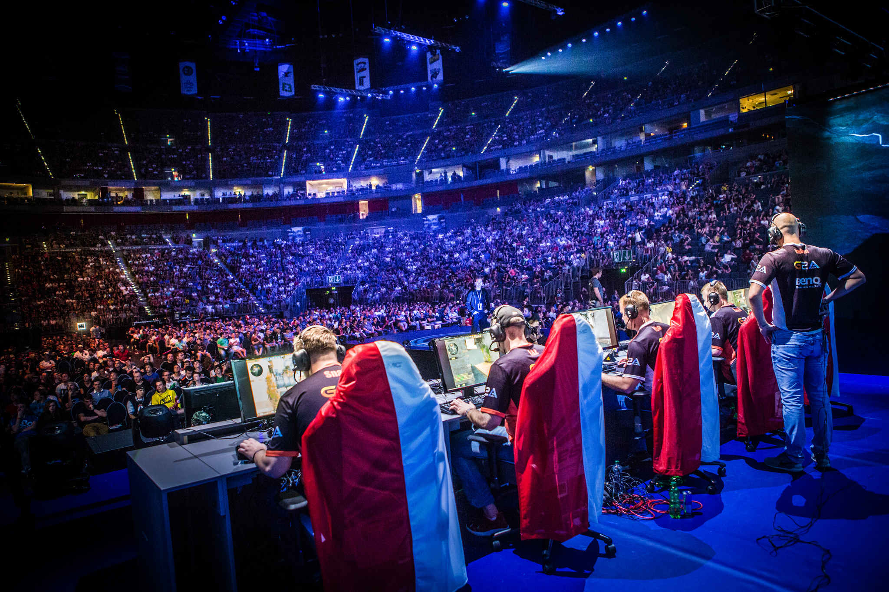
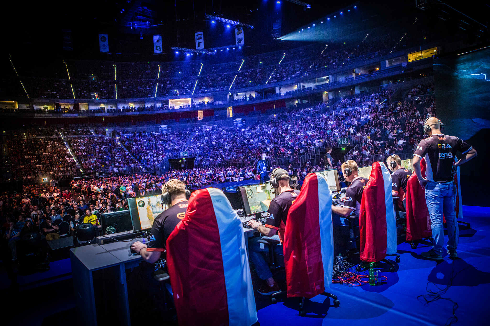
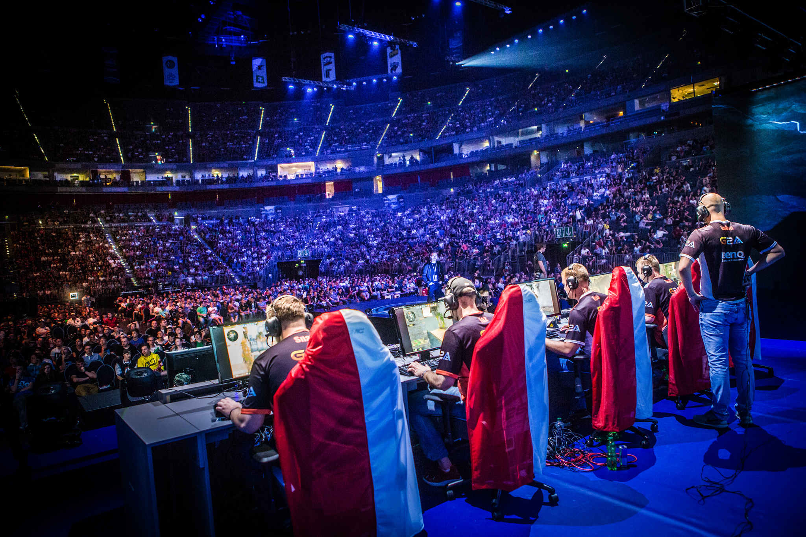
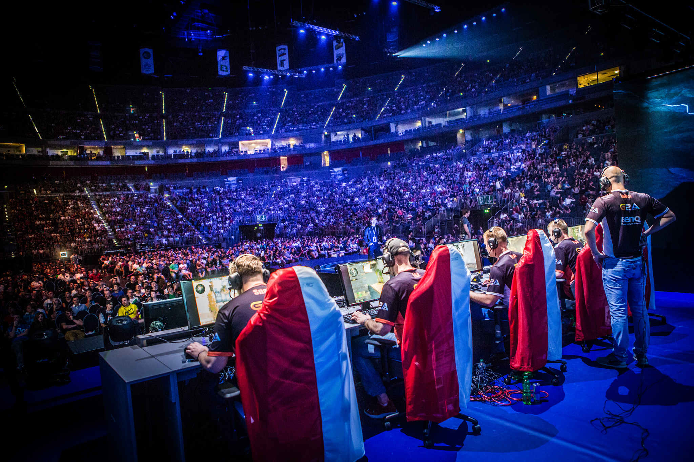

 

Esports (also known as electronic sports, e-sports, or eSports) is a form of sport competition using video games.Esports often takes the form of organized, multiplayer video game competitions, particularly between professional players, individually or as teams. Although organized competitions have long been a part of video game culture, these were largely between amateurs until the late 2000s, when participation by professional gamers and spectatorship in these events through live streaming saw a large surge in popularity.By the 2010s, esports was a significant factor in the video game industry, with many game developers actively designing and providing funding for tournaments and other events.
226 million gamers tuned into eSports in 2015 and the number of Esports Enthusiasts reached 115 million, a YoY growth of 27.7%
The opportunities for amateurs who turn pro can see them compete for prize pools up to USD $18 million, greater than the NFL Super bowl.
Internationally people spend more time playing video games than playing all offline sport combined.
Find Out More